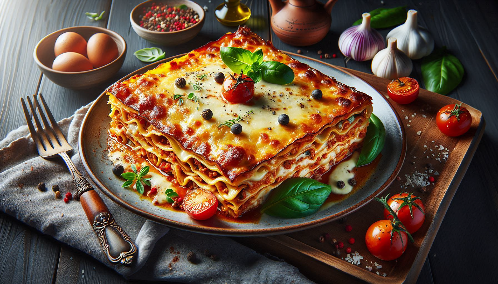

Lasagna Recipe

A hearty, layered pasta dish baked with rich meat sauce, creamy cheese, and melty mozzarella.
Lasagna is the ultimate comfort food — rich, cheesy, and layered with flavor. This classic Italian-American dish combines sheets of tender pasta with layers of hearty meat sauce, creamy béchamel or ricotta cheese, and plenty of gooey melted mozzarella. Baked until golden and bubbling, each bite delivers a perfect balance of savory, cheesy, and satisfying goodness.
Perfect for family dinners, meal prepping, or impressing guests, lasagna is a versatile recipe that can be tweaked to fit your vibe — whether you're going traditional with beef and tomato sauce or experimenting with veggies, chicken, or even a white sauce. It’s a meal that feels like a hug from the inside.
Ingredients
- Lasagna noodles
- Ground beef
- Tomato sauce
- Ricotta cheese
- Shredded mozzarella cheese
- Parmesan cheese
- Egg
- Garlic
- Onion
- Olive oil
- Salt and pepper
Steps of make Lasagna
- Preheat your oven to 375°F (190°C).
- In a large skillet, heat olive oil over medium heat. Add chopped onions and minced garlic, sautéing until translucent.
- Add ground beef to the skillet, cooking until browned. Drain excess fat.
- Stir in tomato sauce, salt, and pepper. Simmer for 15 minutes.
- In a bowl, mix ricotta cheese, egg, and Parmesan cheese.
- Spread a layer of meat sauce in a baking dish. Layer noodles, ricotta mixture, and mozzarella cheese. Repeat layers.
- Finish with a layer of noodles and remaining mozzarella on top.
- Cover with foil and bake for 25 minutes. Remove foil and bake for an additional 15 minutes.
- Let it cool for 10 minutes before slicing. Serve and enjoy!